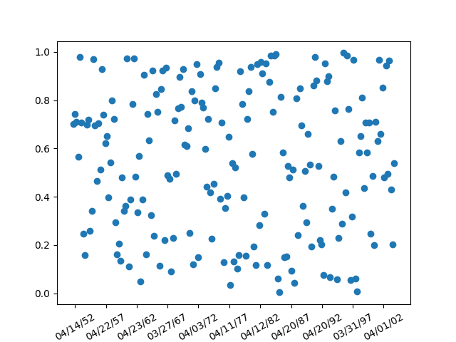

Version 3.1.1
Note
Click here to download the full example code
Show how to use an rrule instance to make a custom date ticker - here we put a tick mark on every 5th easter
See https://dateutil.readthedocs.io/en/stable/ for help with rrules
import matplotlib.pyplot as plt
from matplotlib.dates import (YEARLY, DateFormatter,
rrulewrapper, RRuleLocator, drange)
import numpy as np
import datetime
# Fixing random state for reproducibility
np.random.seed(19680801)
# tick every 5th easter
rule = rrulewrapper(YEARLY, byeaster=1, interval=5)
loc = RRuleLocator(rule)
formatter = DateFormatter('%m/%d/%y')
date1 = datetime.date(1952, 1, 1)
date2 = datetime.date(2004, 4, 12)
delta = datetime.timedelta(days=100)
dates = drange(date1, date2, delta)
s = np.random.rand(len(dates)) # make up some random y values
fig, ax = plt.subplots()
plt.plot_date(dates, s)
ax.xaxis.set_major_locator(loc)
ax.xaxis.set_major_formatter(formatter)
ax.xaxis.set_tick_params(rotation=30, labelsize=10)
plt.show()
Keywords: matplotlib code example, codex, python plot, pyplot Gallery generated by Sphinx-Gallery